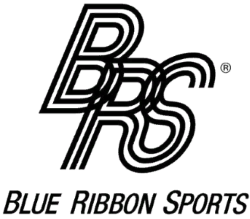
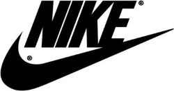
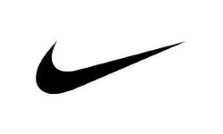
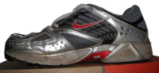
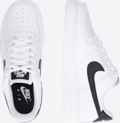
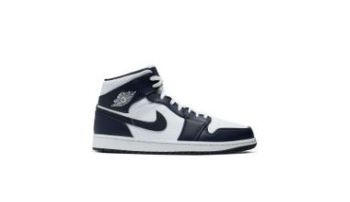

NIKE
INFORMÁCIE
Nike je najväčším svetovým dodávateľom športovej obuvi a oblečenia a hlavným výrobcom športového vybavenia s príjmami presahujúcimi 46 miliárd USD vo fiškálnom roku 2022. Spoločnosť bola založená 25. januára 1964 pod názvom „Blue Ribbon Sports“ Billom Bowermanom a Philom Knightom a oficiálne sa stala Nike, Inc. 30. mája 1971. Názov spoločnosti je odvodený od Nike, gréckej bohyne víťazstva.
HISTÓRIA
Spoločnosť Nike, pôvodne známa ako Blue Ribbon Sports (BRS), založil atlét Phil Knight z University of Oregon a jeho tréner Bill Bowerman 25. januára 1964. V prvom roku svojho podnikania predala BRS 1 300 párov japonských bežeckých topánok za 8 000 dolárov.
VÝVOJ LOGA



PRODUKTY
Nike vyrába široký sortiment športového vybavenia a oblečenia. Ich prvými produktmi boli bežecké topánky Nike Air Max.

Medzi aktuálne populárne produkty značky Nike patria: Nike Air Force 1, Nike Jordan 1 Mid, Nike Tech Fleece atd.

